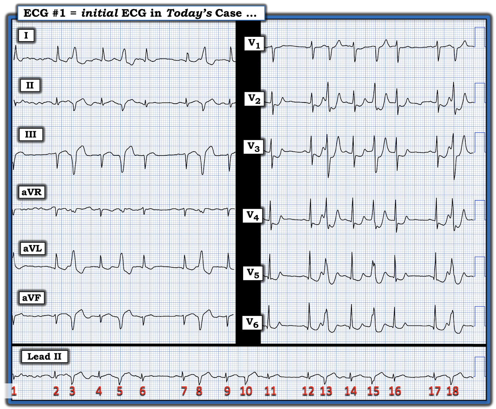
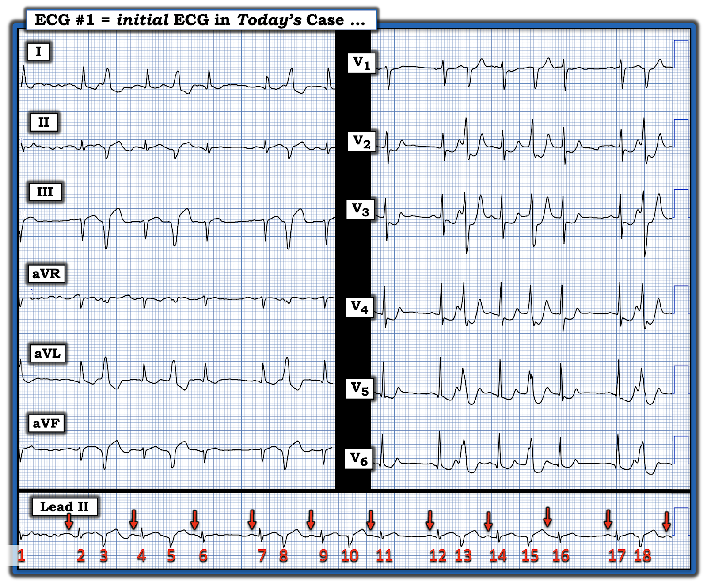
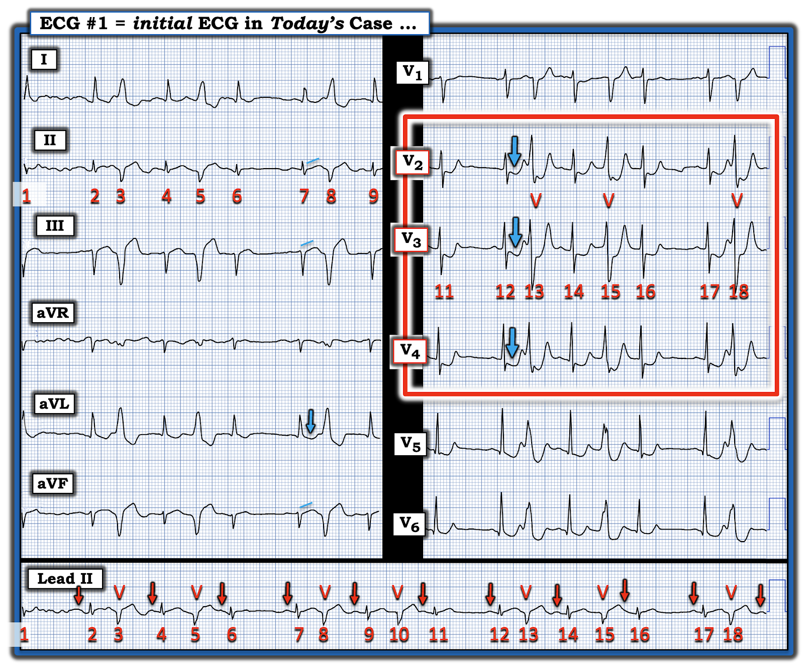
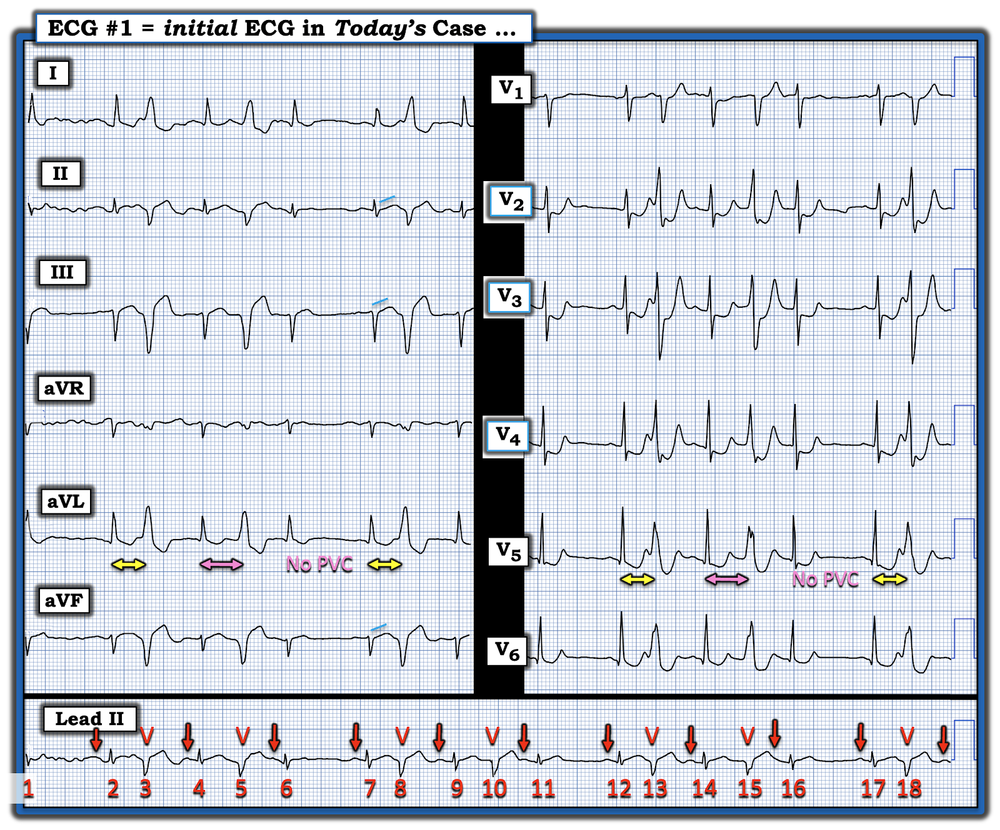
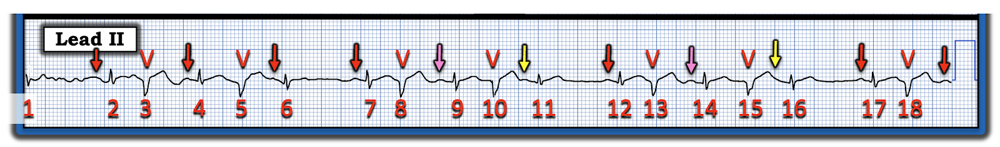
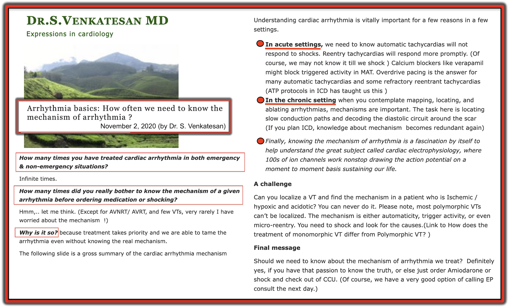
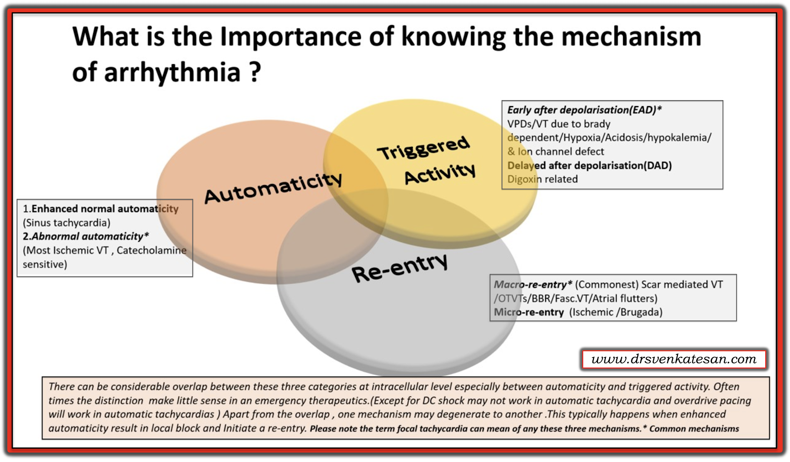
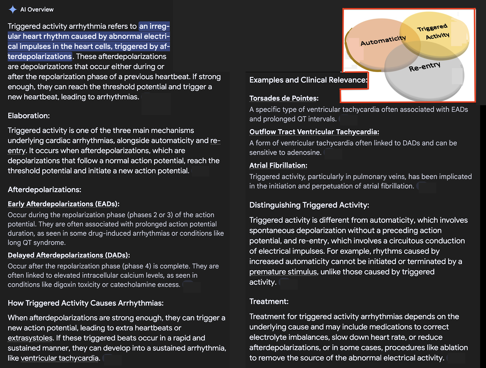

ECG Blog #486 — Khoảng ghép bất thường
Điện tâm đồ ở Hình-1 là của một người đàn ông trung niên — đến ED (khoa cấp cứu — Emergency Department) vì đau ngực từng cơn CP (Chest Pain). Bệnh nhân ổn định huyết động tại thời điểm ghi điện tâm đồ này.
CÂU HỎI:
- Bạn đọc điện tâm đồ ở Hình-1 này như thế nào?
- — Nhịp là gì?
- — Bạn có kích hoạt phòng thông tim (cath lab) không?


================================
Suy nghĩ ban đầu của tôi về CA BỆNH hôm nay:
Đây là một ca khó — vì cả nhịp lẫn bản ghi 12 chuyển đạo đều có những điểm phức tạp, cần được giải quyết một cách tiết kiệm thời gian ở bệnh nhân đến ED vì CP mới xuất hiện này.
- Trong những ca nhạy cảm với thời gian như ca này — tôi thích bắt đầu việc đọc bằng một cái nhìn nhanh vào dải nhịp chuyển đạo dài (tức là dải nằm ở phía dưới Hình-1).
- Xin nhấn mạnh: Lúc đầu không cần đọc nhịp chính xác. Nhưng sẽ hữu ích nếu xác định được nhịp nền có phải là nhịp xoang hay không — và xác định xem có cần biện pháp xử trí ban đầu nào cho nhịp hay không.
- Sau cái nhìn nhanh vào nhịp này (và sau khi xác nhận bệnh nhân ổn định huyết động) — tôi tập trung vào việc khảo sát nhanh 12 chuyển đạo (tức là Ở bệnh nhân hôm nay đến viện vì CP mới xuất hiện — chúng ta muốn xác định càng nhanh càng tốt LIỆU có cần thông tim sớm, tiêu sợi huyết hay các biện pháp điều trị cấp cứu khác hay không).
- LƯU Ý: Dù tôi mô tả những suy nghĩ ban đầu của mình theo kiểu "quay chậm" — trong phần lớn các ca, tổng thời gian tôi dành cho Khảo sát ban đầu nhịp và 12 chuyển đạo — nên dưới 1 phút (và thường dưới 30 giây).
Nhịp tim trong bản ghi hôm nay:
Nhịp nền trong bản ghi hôm nay, như thấy ở dải nhịp chuyển đạo II dài — là nhịp xoang (các mũi tên ĐỎ ở Hình-2 đánh dấu các sóng P dương ở chuyển đạo này).
- Có PVC thường xuyên ( = các nhát #3,5; 8,10; 13,15; và 18) — nhưng không thấy dạng PVC lặp lại (tức là Không bao giờ có quá 1 PVC liên tiếp).
- LƯU Ý: Nhịp hôm nay còn nhiều điều để xem — nhưng vì bệnh nhân này ổn định huyết động, chúng ta không cần đánh giá gì thêm ngoài những điều trên cho Khảo sát ban đầu về nhịp (việc này lẽ ra chỉ mất vài giây).


================================
Điện tâm đồ 12 chuyển đạo:
Đến đây — tôi chuyển sự chú ý sang điện tâm đồ 12 chuyển đạo. Với biểu hiện lâm sàng hôm nay (tức là CP mới xuất hiện ở một người đàn ông trung niên — có nhịp xoang kèm PVC đồng dạng thường xuyên) — nhiệm vụ chính của chúng ta khi Khảo sát ban đầu điện tâm đồ 12 chuyển đạo là xác định xem có cần thông tim sớm hay không.
- ĐIỂM THEN CHỐT (PEARL) #1: Vì có PVC thường xuyên — chúng ta cần tập trung vào hình dạng ST-T ở các nhát dẫn truyền từ xoang ( = các nhát #2,4,6; 7,9,11; 12,14,16; và 17 — ở Hình-3).
- Sự chú ý của tôi lập tức bị hút vào 3 chuyển đạo nằm trong hình chữ nhật ĐỎ ở Hình-3 ( = các chuyển đạo V2,V3,V4). Lưu ý rằng ST chênh xuống là tối đa ở các nhát dẫn truyền từ xoang trong 3 chuyển đạo này — so với ST chênh xuống thấy ở các chuyển đạo ngực khác (các mũi tên XANH lớn ở các chuyển đạo V2,V3,V4).
- ĐIỂM THEN CHỐT (PEARL) #2: Ở bệnh nhân có CP mới xuất hiện — dấu hiệu ST chênh xuống tối đa ở chuyển đạo V2 và/hoặc V3 và/hoặc V4 cho thấy OMI thành sau cấp cho đến khi chứng minh được điều ngược lại!
- ĐIỂM THEN CHỐT (PEARL) #3: Dù việc đánh giá ý nghĩa lâm sàng của ST chênh xuống ở các PVC luôn khó hơn — vẫn có những lúc hình dạng ST chênh xuống ở PVC rõ ràng là bất thường. Tôi cho rằng đây là trường hợp của các PVC nằm trong hình chữ nhật ĐỎ ở Hình-3 ( = các nhát #13, 15, 18) — các nhát này cho thấy ST chênh xuống còn nhiều hơn so với các nhát xoang #11,12,14,16,17.
- ĐIỂM THEN CHỐT (PEARL) #4: Do có chung nguồn cấp máu — OMI thành sau cấp thường đi kèm nhồi máu cơ tim thành dưới cấp. Và dù không có ST chênh lên ở các chuyển đạo thành dưới ở Hình-3 — vẫn có thẳng đuỗn của đoạn khởi đầu ST ở các chuyển đạo II,III,aVF (các đường XANH chéo phía trên đoạn ST ở các chuyển đạo này). Cũng có ST chênh xuống soi gương ở chuyển đạo aVL (mũi tên XANH ở chuyển đạo này) — nên những dấu hiệu tối cấp tinh tế này của OMI thành dưới cấp giúp khẳng định nhận định của tôi về tình trạng ST chênh xuống rõ rệt đã lập tức "đập vào mắt" tôi ở các chuyển đạo ngực (trong hình chữ nhật ĐỎ).
- ĐIỀU CỐT LÕI: Trong vòng chưa đầy 1 phút — tôi biết người đàn ông trung niên có CP mới xuất hiện và PVC thường xuyên này — đang tiến triển một OMI dưới-sau cấp — và rõ ràng có chỉ định kích hoạt phòng thông tim sớm!


ĐIỂM THEN CHỐT (PEARL) #5: Lưu ý rằng có ST dẹt, nhưng ST chênh xuống không quá mức tối thiểu ở các nhát dẫn truyền từ xoang tại chuyển đạo V1 của Hình-3. Với mức ST chênh xuống nhiều như chúng ta thấy ở các nhát dẫn truyền từ xoang tại các chuyển đạo lân cận V2,V3,V4 — cách giải thích hợp lý nhất cho việc không thấy ST chênh xuống nhiều hơn ở chuyển đạo V1 (chuyển đạo cũng thường có ST chênh xuống khi OMI thành sau) — là có kèm tổn thương thất phải cấp (nhồi máu thất phải (RV MI) thường biểu hiện ST chênh lên ở chuyển đạo V1 nằm bên phải — điều này sẽ làm giảm bớt mọi mức ST chênh xuống lẽ ra đã thấy ở chuyển đạo V1 do OMI thành sau).
- Về lâm sàng — Cần nhận biết nhồi máu thất phải cấp vì huyết động của nó khác biệt (Xem ECG Blog #190 — để biết thêm về chẩn đoán điện tâm đồ và ý nghĩa lâm sàng của nhồi máu thất phải cấp).
- Cách để xác nhận có (hay không có) nhồi máu thất phải cấp — là ghi các chuyển đạo bên phải (sẽ cho thấy ST chênh lên ở các chuyển đạo V2R,V3R,V4R).
- Về giải phẫu — phát hiện nhồi máu thất phải cấp giúp định vị động mạch "thủ phạm" là RCA đoạn gần (động mạch vành phải — Right Coronary Artery) — vì LCx không cấp máu cho thất phải.
ĐIỂM THEN CHỐT (PEARL) #6: Nhìn "tổng quan" thêm một lần nữa vào hình dạng ST-T của các nhát dẫn truyền từ xoang ở Hình-3 — có bất thường ST-T ở hầu như tất cả các chuyển đạo trong bản ghi này. Vì vậy, ngoài động mạch "thủ phạm" là RCA đoạn gần mà tôi dự đoán sẽ thấy khi thông tim — tôi sẽ không ngạc nhiên nếu bệnh nhân còn có bệnh nhiều nhánh mạch vành nền đáng kể.
- Xin nhấn mạnh: Những phát hiện cụ thể khi thông tim sẽ rất thú vị để biết — nhưng không cần thiết cho việc ra quyết định trong Khảo sát ban đầu nhanh của tôi — như đã mô tả ở trên, khảo sát này đủ để nhận ra nhu cầu thông tim sớm kèm PCI ở bệnh nhân có CP mới xuất hiện, PVC thường xuyên — và bằng chứng rõ ràng của OMI dưới-sau cấp.
DIỄN TIẾN CỦA CA BỆNH:
Thông tim được thực hiện kịp thời. Kết quả cho thấy tắc RCA đoạn gần.
================================
Vượt ra ngoài phần cốt lõi (Beyond-the-Core): Với tôi, khía cạnh thú vị của ca hôm nay — liên quan đến khoảng ghép (coupling interval) của các PVC mà chúng ta thấy ở điện tâm đồ #1.
- Vì tập trung vào điều trị — chúng ta thường bỏ qua việc xem xét các cơ chế của rối loạn nhịp tim. Nhưng nhận biết các cơ chế này (tuy có chồng lấp, nhưng thường thuộc 3 nhóm: tăng tính tự động — vào lại — và hoạt động "khởi kích" (triggered activity)) — đôi khi sẽ cung cấp hiểu biết quan trọng để lựa chọn điều trị tối ưu. (Mời xem PHẦN BỔ SUNG của tôi bên dưới — trong đó tôi trích phần tổng quan ngắn gọn xuất sắc về các khái niệm này từ trang web của Dr. S Venkatesan, Expressions in Cardiology — ngày 2 tháng 11 năm 2020).
- Theo Dr. Venkatesan — cơ chế thường gặp của phần lớn các nhịp VT do thiếu máu cục bộ là tăng tính tự động (đặc biệt khi điện tâm đồ cho thấy hình dạng đa dạng với khoảng ghép thay đổi). Điều này trái ngược với các nhịp VT liên quan sẹo và nhịp VT vô căn, vốn có xu hướng lan truyền qua tâm thất theo một đường cố định, vì chúng xuất phát từ một vị trí xác định rõ (tức là sẹo) — hoặc trong trường hợp VT vô căn (VT phân nhánh (fascicular VT); VT đường ra thất phải (RVOT VT)) — từ một vị trí giải phẫu cụ thể. Từ đó suy ra hình dạng QRS thường sẽ đơn dạng — khoảng ghép có xu hướng hằng định (do đường vào lại lặp đi lặp lại) — và nhìn chung ít có khả năng chuyển thành rung thất (VFib).
- Vì vậy, tôi thấy hữu ích khi xem xét khoảng ghép (tức là khoảng cách từ phức bộ QRS xoang đến điểm khởi đầu của PVC) — với nhận thức rằng việc chuyển thành rung thất dường như ít gặp hơn với các PVC đơn lẻ, đơn dạng có khoảng ghép cố định (Hamon và cs. — Circulation: Arrhythm & Electrophysiol 10(4):XXX, 2017) — và — deVries và cs. — J Interv Card Electrophysiol 51(1):25-33, 2018).
- Ngoại trừ phó tâm thu (một rối loạn nhịp thất do ổ độc lập, ít gặp và thường lành tính) — nhiều (phần lớn) PVC đồng dạng mà tôi gặp có khoảng ghép khá cố định.
- Điện tâm đồ hôm nay là một ngoại lệ ...
Khoảng ghép kiểu Wenckebach?
Các PVC thường xuyên mà chúng ta thấy ở điện tâm đồ #1 trong ca hôm nay là đơn dạng (hình dạng QRS tương tự nhau ở mỗi chuyển đạo trong 12 chuyển đạo đối với các nhát #3,5; 8,10; 13,15; và 18 — ngoại trừ những khác biệt nhỏ do nhiễu).
- Như thấy ở Hình-4 bên dưới — có hình ảnh nhịp theo nhóm (group beating) của các PVC này (hình ảnh này lặp lại, cho thấy 2 PVC trong mỗi nhóm 5 nhát đối với các nhát #2-đến-6; 7-đến-11; và 12-đến-16).
- Như các mũi tên hai đầu có màu cho thấy — khoảng ghép tăng dần trong mỗi nhóm (từ mũi tên hai đầu VÀNG — đến mũi tên hai đầu HỒNG) — cho đến khi có một khoảng ngưng không có PVC nào (tức là trong các khoảng R-R giữa các nhát #6-đến-7; 11-đến-12; và 16-đến-17) — sau đó chu kỳ (với mũi tên hai đầu VÀNG tiếp theo) lại bắt đầu.
- Thời điểm xuất hiện nhịp theo nhóm với PVC như thế này trong bản ghi hôm nay — theo tôi gợi ý rằng chu kỳ vào lại quyết định khoảng ghép của các PVC này biểu hiện tính chu kỳ Wenckebach (Hansom và cs. — Curr Cardiol Rev 17(1):10-16, 2021). Trước đây tôi chưa từng quan sát thấy hiện tượng khoảng ghép PVC diễn tiến theo kiểu Wenckebach như thế này.
- Giả thuyết của tôi: Trong khi khoảng ghép cố định (cơ chế vào lại) của PVC thường đi kèm nguy cơ chuyển thành rung thất có phần thấp hơn — thì thiếu máu cục bộ cấp rõ ràng trên điện tâm đồ hôm nay tạo thuận lợi cho các cơ chế rối loạn nhịp khác (tăng tính tự động; hoạt động "khởi kích") biểu hiện ở đây dưới dạng tính chu kỳ Wenckebach của khoảng ghép PVC. Mối lo ngại là nguy cơ cao hơn có thể có từ các PVC này (vì vậy, ca hôm nay càng có thêm lý do để thông tim sớm kèm tái tưới máu bằng PCI).


Khái niệm Vượt ra ngoài phần cốt lõi cuối cùng hôm nay: BẠN có để ý sự tăng dần khoảng PR của các nhát dẫn truyền từ xoang trong các nhóm 5 nhát ở dải nhịp chuyển đạo II dài hôm nay không?
- Tôi minh họa dấu hiệu này ở Hình-5 — trong đó tôi chỉ tập trung vào dải nhịp chuyển đạo II dài. Nhiễu đường nền ở nhóm thứ 1 (các nhát #2-đến-6) khiến việc đánh giá hiện tượng này khó khăn. Nhưng sự tăng khoảng PR của các nhát được dẫn truyền thì thấy rõ ở 2 nhóm cuối (sự tăng khoảng PR này được làm nổi bật khi chúng ta đi từ mũi tên ĐỎ — sang HỒNG — sang VÀNG trong 2 nhóm cuối này).
- Như giản đồ bậc thang minh họa trong ECG Blog #68 — sự tăng khoảng PR của nhát dẫn truyền từ xoang kế tiếp xảy ra sau một PVC không phải là do Wenckebach. Thay vào đó, nó phản ánh hiện tượng dẫn truyền "ẩn" (concealed conduction) — trong đó dẫn truyền ngược dòng từ PVC đi trước, tuy không đủ để chặn dẫn truyền xuôi của nhát xoang kế tiếp — lại đủ để kéo dài nhẹ khoảng PR theo sau.
- Thuật ngữ "ẩn" được dùng vì chúng ta không thể giải thích tác động này lên khoảng PR theo sau dựa trên những gì thấy được trên điện tâm đồ thực tế — mà phải suy luận rằng có dẫn truyền ngược dòng từ PVC cản trở dẫn truyền xuôi của xung động xoang kế tiếp.


==================================
Lời cảm ơn: Xin cảm ơn Narveen Sharma (đến từ Ấn Độ) đã cung cấp ca bệnh và bản ghi này.
==================================
==================================
PHẦN BỔ SUNG #1 (5/7/2025):
- Tổng quan về các cơ chế cơ bản của rối loạn nhịp tim:
============================






==================================
PHẦN BỔ SUNG #2 (5/7/2025):
- Tài liệu thêm — về việc đọc điện tâm đồ trong OMI (các trường hợp không thỏa tiêu chuẩn STEMI dựa trên milimét).

- Trong "My ECG Podcasts" — Mời xem ECG Podcast #2 (Những sai sót khi đọc điện tâm đồ dẫn đến bỏ sót tắc động mạch vành cấp).
- Trong 'My ECG Videos" — Mời xem gần đầu trang đó các VIDEO từ các bài giảng điện tâm đồ MedAll của tôi, ôn lại chẩn đoán nhồi máu cơ tim cấp trên điện tâm đồ — và cách nhận biết OMI cấp khi không thỏa tiêu chuẩn STEMI (được ôn lại trong ECG Blog #406 — Blog #407 — Blog #408).
- Xin LƯU Ý — Với mỗi video trong 6 video MedAll ở đầu trang My ECG Videos, NẾU bạn bấm vào "More" trong phần mô tả, bạn sẽ có Mục lục có liên kết cho phép chuyển thẳng đến phần bàn luận các điểm cụ thể (tức là ở phút 5:29 trong video 22 phút của Blog #406 — bạn có thể chuyển đến "Bạn CÓ THỂ nhận biết OMI khi không có dấu hiệu STEMI!" ).
T.B. (P.S.): Về một ca bệnh gây trăn trở, đáng suy ngẫm do bác sĩ tim mạch Dr. Willy Frick bàn luận — kèm Bình luận của tôi với tư cách biên tập ở cuối trang (trong bài đăng ngày 17 tháng 3 năm 2025) — Mời xem ca này.
- Như Dr. Frick và tôi nhấn mạnh — không chỉ "mô hình STEMI" hiện nay đã lỗi thời — mà trong những ca như ca chúng tôi mô tả, vì người điều trị chờ đến khi tiêu chuẩn STEMI cuối cùng được thỏa — thông tim và PCI đã bị trì hoãn hơn 1 ngày.
- NHƯNG — vì phòng thông tim đã được kích hoạt trong vòng 1 giờ kể từ điện tâm đồ cuối cùng thỏa tiêu chuẩn STEMI — ca này sẽ được ghi vào các sổ đăng ký nghiên cứu là "rất thành công với việc kích hoạt nhanh phòng thông tim trong vòng 1 giờ kể từ khi nhận diện "STEMI". Cách diễn giải sai lầm này về các sự kiện hoàn toàn bỏ qua thực tế lâm sàng rằng bệnh nhân này đã mất một cách không cần thiết một lượng cơ tim đáng kể vì điện tâm đồ ban đầu (ghi sớm hơn >24 giờ) rõ ràng đã chẩn đoán STEMI(-)/OMI(+) nhưng không được xử trí vì người điều trị bị "mắc kẹt" vào quy trình STEMI.
- Hệ quả đáng tiếc là tạo ra những "bằng chứng ủng hộ" sai lầm trong y văn, gợi ý tính đúng đắn của một mô hình đã lỗi thời và không còn chính xác.
- Thực tế lâm sàng: Nhiều trường hợp tắc động mạch vành cấp không bao giờ xuất hiện ST chênh lên (hoặc chỉ xuất hiện ST chênh lên muộn hơn trong diễn tiến) — trong khi chú ý đến các tiêu chuẩn điện tâm đồ bổ sung trong các tài liệu tham khảo ở trên có thể giúp chúng ta nhận diện OMI cấp ở nhiều ca STEMI(-) như vậy.
==========================